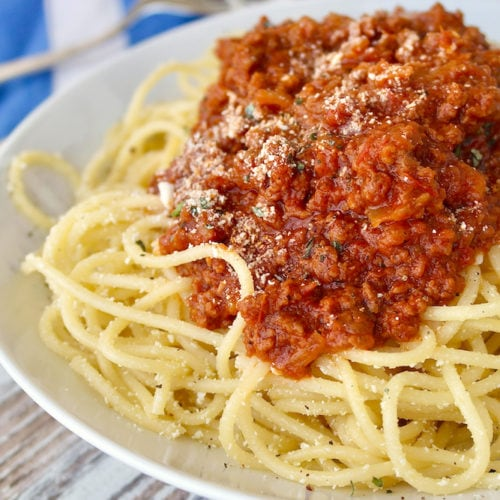

Spaghetti Recipe

Homemade Garlic and Onion Spaghetti
This homemade spaghetti is an all time classic.
One of the simpler meals that will leave
you full and satisfied and super easy to make!
Time to cook: Est 20 minutes
Serves: 2-4
Ingrediants
- Noodles
- Tomato Sauce
- Onion
- Garlic
- Chives
- Parmesan Cheese
- Roesmary
- Can of Diced Tomatoes
Instructions
- Boil water with a pinch of salt added
- Whene water is at rolling boil added Noodles
- Pour sauce in a sauce pot and begin to heat
- Added diced onion, garlic, and seasonings
- Strain noodles when they're at preferred texture
- Combine noodles and sauce then top with cheese
- Enjoy!!!